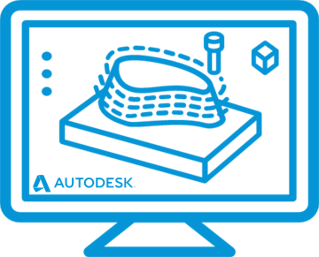
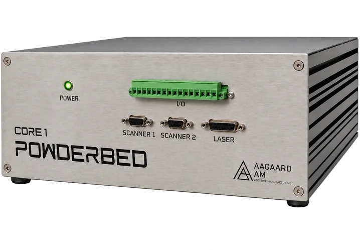

Works great with
Autodesk Machine Control Framework
The Autodesk Machine Control Framework (AMCF) is an open-source framework for building the control software of additive manufacturing machines. Together with the buildstyle it closes the loop from the part in Fusion to the laser on the machine, with open code on both ends.
- Open toolpath data: the buildstyle exports the 3MF toolpath format, layer by layer
- Open on both sides: change the exposure strategy and the machine logic in code you own
- Laser parameters per vector type travel with the job as profiles

Ready-to-run machine control
POWDERBED Core 1
POWDERBED by Aagaard AM makes Core 1: an off-the-shelf scanner and laser controller for laser powder bed fusion, with the machine software already in the box. That software is the Autodesk Machine Control Framework, so the 3MF toolpaths the buildstyle exports go straight to the scanner and laser.
- Autodesk Machine Control Framework preinstalled, open source under BSD-3, with simulation
- 3MF toolpaths with laser power, speed and delays per vector
- Adjustable build styles and Autodesk Fusion CAD/CAM integration included
- For research labs and machine builders
Scan heads and scan control
SCANLAB
SCANLAB is the world's leading independent OEM manufacturer of scan heads and scan solutions. Its scanners and RTC scan controllers steer the laser in powder bed fusion machines. In the video, SCANLAB and the Professorship of Laser-based Additive Manufacturing at the Technical University of Munich (TUM) talk about their work with Autodesk.
- In the video: Daniel Reitemeyer and Holger Schlüter (SCANLAB), Prof. Dr. Katrin Wudy and Richard Off (TUM)
- POWDERBED Core 1 is built around a SCANLAB RTC6 scan controller board